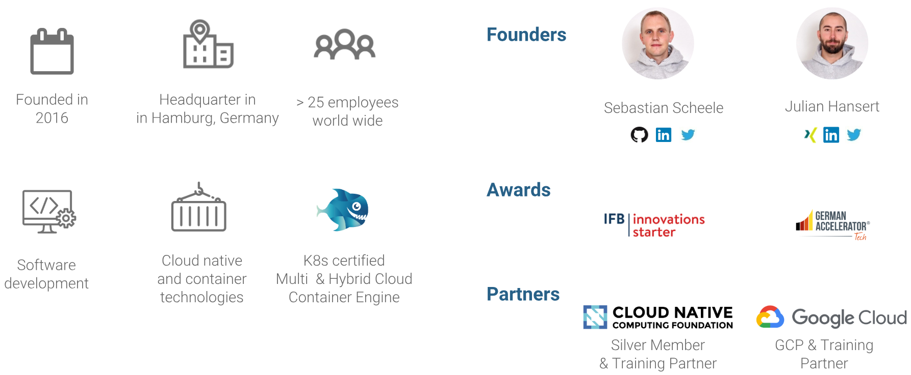
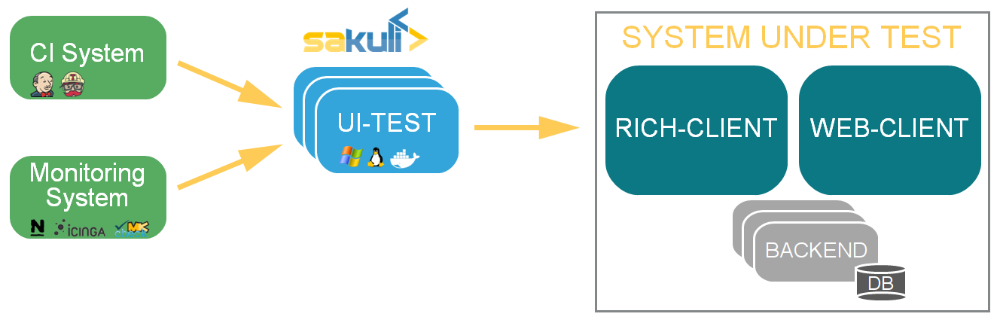
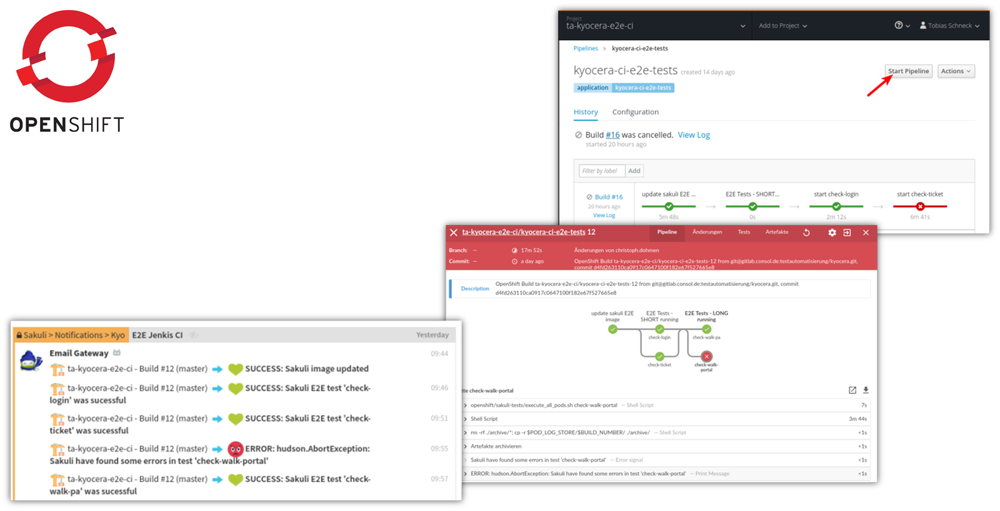

UI-Testing
Selenium? Rich-Clients? Containers?
How is Loodse?
During the UI development phase ...
Yeah - release 1.0 is out!

Writing first web UI tests!
| Sahi OS | Selenium | TestCafe |
 |
First Selenium Test
public class CitrusHtmSeleniumTest {
private static final String CITRUS_URL = "http://www.citrusframework.org/";
private WebDriver driver;
private CustomSeleniumDsl dsl;
@BeforeMethod
public void setUp() {
driver = new ChromeDriver();
dsl = new CustomSeleniumDsl((JavascriptExecutor) driver);
}
@Test
public void testCitrusHtmlContent() throws Exception {
driver.get(CITRUS_URL);
//find Heading
WebElement heading1 = driver.findElement(By.cssSelector("p.first"));
dsl.highlightElement(heading1);
assertEquals(heading1.getText(), "Citrus Integration\nTesting");
assertTrue(heading1.isDisplayed());
//validate HTML content
WebElement heading2 = driver.findElement(By.tagName("h1"));
dsl.highlightElement(heading2);
assertEquals(heading2.getText(), "Integration challenge");
assertTrue(heading2.isDisplayed());
}
@AfterMethod
public void tearDown() { driver.close();}
}
Next step ?
Make this things perfect!
- Rewrite all of our tests?
- Validate the documentation PDF?
- Test the rich-client implementation as well?
- Where to run the test?
- Keep current tests
- Use same codebase
- Keep it simple
 Concept
Concept

Add Maven Dependencies
org.sakuli
sakuli-selenium-setup
1.3.0-247-sakuli-se-SNAPSHOT
test
labs-consol
ConSol Labs Repository
http://labs.consol.de/maven/repository
false
true
labs-consol-snapshots
ConSol Labs Snapshot-Repository
http://labs.consol.de/maven/snapshots-repository
true
true
Use the Sakuli Annotations
@Listeners(SakuliSeTest.class)
public class BasicSakuliSeTest {
private static final String PDF_EDITOR_NAME = "masterpdfeditor4";
protected WebDriver driver;
protected Region screen;
protected Environment env;
protected SeTestCaseAction tcAction;
private Application pdfEditor;
@BeforeMethod
public void setUp() throws Exception {
driver = getSeleniumDriver();
screen = new Region();
env = new Environment();
tcAction = new SeTestCaseAction();
}
@AfterMethod(alwaysRun = true)
public void tearDown() throws Exception {
if (driver != null)
driver.close();
}
private Application openPDF(String pdfFilePath) {
return pdfEditor = new Application(PDF_EDITOR_NAME + " \"" + pdfFilePath + "\"").open();
}
//....
}
Use the Sakuli Annotations
public class GitHubSakuliSeExampleTest extends AbstractSakuliSeTest {
private String SAKULI_URL = "https://github.com/ConSol/sakuli/blob/master/README.adoc";
@Test
@SakuliTestCase(additionalImagePaths = "/common_pics")
public void test1() throws Exception {
//your test code
driver.get(SAKULI_URL);
screen.highlight(5);
screen.find("sakuli_logo.png").highlight();
}
@Test
@SakuliTestCase(
testCaseName = "mysecondtest",
warningTime = 15, criticalTime = 25,
additionalImagePaths = "/common_pics")
public void test2() throws Exception {
//your test code
driver.get(SAKULI_URL);
screen.highlight(5);
screen.type(Key.END).find("github_logo.png").highlight();
}
}
- Rewrite all of our tests?
- Validate the documentation PDF?
- Test the rich-client implementation as well?
- Where to run the test?
- Generate PDF file
- Open it in a native PDF viewer
- Validate the content
Test Definition (Selenium only)
@Test
@SakuliTestCase
public void testCitrusHtmlContent() throws Exception {
testCitrusContent("HTML");
//VALIDATE HTML content
WebElement heading = driver.findElement(
By.cssSelector("#citrus-framework--reference-documentation-"));
dsl.highlightElement(heading);
assertEquals(heading.getText(), "Citrus Framework - Reference Documentation");
assertTrue(heading.isDisplayed());
//VALIDATE PDF ???
}
public void testCitrusContent(String dest) throws Exception {
searchHeading();
WebElement docuLink = driver.findElement(By.partialLinkText("Documentation"));
dsl.highlightElement(docuLink);
assertTrue(docuLink.isDisplayed());
docuLink.click();
WebElement userGuideLink = driver.findElement(By.partialLinkText("User Guide"));
dsl.highlightElement(userGuideLink);
assertTrue(userGuideLink.isDisplayed());
userGuideLink.click();
WebElement htmlUserGuideLink = driver.findElement(By.partialLinkText(dest));
dsl.highlightElement(htmlUserGuideLink);
assertTrue(htmlUserGuideLink.isDisplayed());
htmlUserGuideLink.click();
}
Test Definition (Selenium + Sakuli SE)
@Test
@SakuliTestCase(additionalImagePaths = "citrus_pics")
public void testCitrusPdfContent() throws Exception {
//opens PDF download page and click download
testCitrusContent("PDF");
screen.find("reload_button.png").highlight();
scroll( //search citrus logo on PDF
() -> screen.exists("pdf_citrus_title.png", 1),
//scroll action
() -> env.type(Key.DOWN).type(Key.DOWN).type(Key.DOWN).type(Key.DOWN),
//times to try
10
);
//navigate over bookmark menu of PDF viewer
screen.find("reload_button.png")
.below(40).highlight()
.mouseMove();
screen.find("bookmark_button.png").highlight().click();
screen.find("bookmark_entry.png").highlight().click();
screen.find("test_case_pdf_heading.png").highlight().click();
//scroll until the expected diagram is visible
scroll(() -> screen.exists("test_case_diagram.png", 1),
() -> env.type(Key.DOWN).type(Key.DOWN).type(Key.DOWN).type(Key.DOWN),
10
);
}
Using Java power for UI testing!
//...
scroll( //search for logo
() -> screen.exists("citrus_fruit.png", 1),
//scroll action
() -> env.type(Key.DOWN).type(Key.DOWN).type(Key.DOWN).type(Key.DOWN),
//times to try
10
);
//...
public void scroll(Supplier<Region> check, Supplier doScroll, int times) throws SakuliException {
for (int i = 1; !Optional.ofNullable(check.get()).isPresent() && i <= times; i++) {
Logger.logInfo("Scroll page (" + i + ")");
doScroll.get();
}
Optional.ofNullable(check.get()).orElseThrow(() ->
new SakuliException("Cannot find region by scrooling!")).highlight();
}
- Rewrite all of our tests?
- Validate the documentation PDF?
- Test the rich-client implementation as well?
- Where to run the test?
- Make an order at the web client
- Trigger the reporting function in the rich client
- Validate the reported count of produces orders
Control Web and Rich Clients
@Test
@SakuliTestCase
public void testWebOrderToReportClient() throws Exception {
driver.get(TEST_URL);
WebElement heading1 = driver.findElement(By.name("Cookie Bakery Application"));
assertTrue(heading1.isDisplayed());
WebElement order = driver.findElement(By.cssSelector("button blueberry-order"));
assertTrue(order.isDisplayed());
for (int i = 0; i < 20; i++) {
LOGGER.info("place blueberry order " + i);
order.click();
}
//open native client application over $PATH
reportClient = new Application("baker-report-client").open();
Region reportClientRegion = reportClient.getRegion();
//generate the report
reportClientRegion.type("r", Key.ALT); //type ALT + r to open the report view
reportClientRegion.find("get-daily-report-button").click();
reportClientRegion.waitForImage("report-header", 10);
try {
reportClientRegion.find("blueberry_muffin_logo");
reportClientRegion.find("report_blueberry")
.below(100)
.find("report_value_20");
} catch (Exception e) {
//useful for custom error messaten
throw new SakuliException("Validation of the report client failed"
+ " - no muffins produced?");
}
}
Rich Client Gnome Editor
@Test
@SakuliTestCase(warningTime = 50, criticalTime = 60)
public void testEditorOpensReadMe() throws Exception {
checkEnvironment();
gedit.open();
// shows fluent API and how sub regions can be used
final Region geditAnchor = screen.waitForImage("gedit", 5)
.highlight()
.click();
// move focus mouse pointer
geditAnchor.below(100).highlight().mouseMove();
// use already known region
final Region otherDocument = geditAnchor
// great larger search region
.below(200).setW(300).highlight()
.waitForImage("search", 20).highlight()
.click()
.type("Hello Guys!")
// base region of "search" button grows 400px
.grow(400, 400).highlight(2)
.find("other_documents").highlight();
//...
}
- Rewrite all of our tests?
- Validate the documentation PDF?
- Test the rich-client implementation as well?
- Where to run the test?
- Run all UI tests in the container
- Make it scalable for parallel execution
- Keep the possibility to "watch" the test
- Should be triggered by the CI server
- Use our internal private cloud infrastructure
We need a containerized UI!

Based on:
ConSol/docker-headless-vnc-container
Containers - the new VMs?

Let's try the Sakuli Container
```bash
# start the docker container
docker run -it -p 5911:5901 -p 6911:6901 consol/sakuli-ubuntu-xfce
docker run -it -p 5912:5901 -p 6912:6901 consol/sakuli-centos-xfce
docker run -it -p 5913:5901 -p 6913:6901 consol/sakuli-ubuntu-xfce-java
docker run -it -p 5914:5901 -p 6914:6901 consol/sakuli-centos-xfce-java
# start in parallel via docker-compose
# use docker-compos.yml from https://github.com/ConSol/sakuli/tree/master/docker
docker-compose up
```

Setup Selenium in Docker
(Dockerfile)
```Dockerfile
FROM consol/sakuli-ubuntu-xfce-java:1.3.0-247-sakuli-se-SNAPSHOT
MAINTAINER Tobias Schneck "tobias.schneck@consol.de"
ENV REFRESHED_AT 2018-07-23
### Install gedit as test app
USER 0
RUN apt-get update \
&& apt-get install -y gedit \
&& apt-get clean -y
USER 1000
### Install webdriver
ENV WEB_DRIVER /headless/webdriver
#chrome
RUN mkdir $WEB_DRIVER && cd $WEB_DRIVER \
&& wget https://chromedriver.storage.googleapis.com/2.25/chromedriver_linux64.zip \
&& unzip *.zip && rm *.zip && ls -la
```
Build and start the container:
```bash
docker build -t local/sakuli-se . \
&& docker run -it -v $(pwd):/opt/maven --user $(id -u) -p 6911:6901 \
local/sakuli-se mvn -P docker test
```
Define a repeatable Test Setup
(e.g. Docker Compose)
```yaml
version: '2'
services:
sakuli_se_test:
build: .
environment:
- TZ=Europe/Berlin
user: "1000"
volumes:
- .:/opt/maven
- data:/headless/.m2
network_mode: "bridge"
ports:
- 5911:5901
- 6911:6901
# to keep container running and login via `docker exec -it javaexample_sakuli_java_test_1 bash`
# command: "'--tail-log'"
command: mvn clean test -P docker -f /opt/maven/pom.xml
volumes:
data:
driver: local
```
Build and start the container:
```bash
docker-compose up --build --force-recreate
```
Add tests to Kubernetes cluster
(e.g. Skaffold)
```yaml
apiVersion: skaffold/v1alpha2
kind: Config
build:
tagPolicy:
gitCommit: {}
artifacts:
- imageName: toschneck/sakuli-se-example
docker:
dockerfilePath: Dockerfile.skaffold
deploy:
kubectl:
manifests:
- ./kubernetes-manifests/**.yaml
```
Build and create Kubernetes Job:
```bash
# local (dev stage)
skaffold dev
# remote (deployment stage)
skaffold run
```
- Rewrite all of our tests?
- Validate the documentation PDF?
- Test the rich-client implementation as well?
- Where to run the test?
Why
- Support different web testing providers:
- Sahi OS
- Selenium
- ... more should follow
- Combines DOM access and native screen recognition
- OpenSource
- no vendor lock in and easy to extend
- Ready-to-use Docker images
- Cloud-ready: Kubernetes & OpenShift
Monitoring Integration
 Nagios
OMD
Incinga
Check_MK
Nagios
OMD
Incinga
Check_MK
CI Pipeline with Jenkins

Test Management UI
- Comfortable writing and management of test suites
- Direct test execution with integrated live view and logs
- Extended reports for easy error detection
- Video
What's next?
- Implement Junit 5 test runner
- Web UI to handle Sakuli test suites
- JavaScript
- Java
- Headless execution
- Linux: VNC & Docker
- Windows: only Terminalserver
- Video recording of the test execution (error documentation)
Links

|
ConSol/sakuli
ConSol/sakuli-examples ConSol/sakuli-examples/java-selenium-example |
| sakuli@consol.de @sakuli_e2e |
Thank you!

|
|
|||||||||||
|
||||||||||||